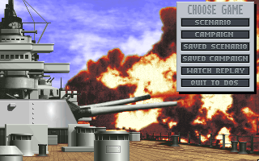
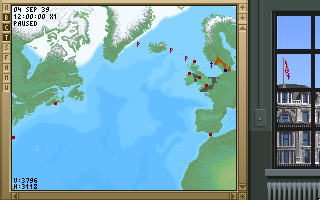
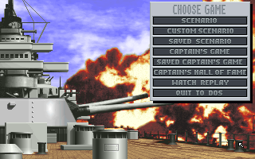
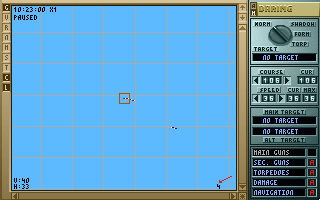

名稱：大海戰1：北大西洋篇 (Great Naval Battles: North Atlantic 1939-43，英文版)
簡介：SSI 1992年出品的即時海戰戰術遊戲，1993年陸續推出「超級戰艦（Super Ships of
the Atlantic）」、「美軍艦隊（America in the Atlantic）」、以及「戰場編輯
（Scenario Builder）」等資料片。台灣由智冠代理進口 [待補]。




備註：本版為1.2版主程式+所有資料片（執行PLAYS.BAT為戰場編輯）
保護：手冊密碼，破解碼：
GNBNA386.EXE, GNBSP386.EXE
C4 08 0B C0 75 07
-- -- -- -- 90 90
或
03 7C A8 83 7E FE 00 75 08 (僅限GNBNA386.EXE)
00 -- -- -- -- -- -- EB --